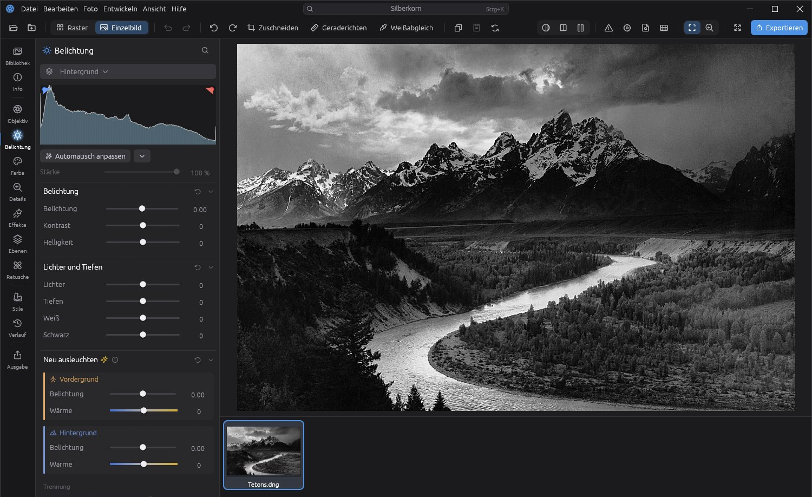

Herunterladen, doppelklicken, loslegen.
Keine Fragen, keine Administratorrechte, kein Konto. Updates kommen von selbst.
Herunterladen
Ein Klick auf den Knopf oben lädt den Installer, etwa 18 MB.
Doppelklick
Der Installer richtet Silberkorn ein, mit Startmenü- und Desktop-Symbol, und startet es auf Wunsch gleich.
Ordner öffnen
Ordner mit RAW-Dateien wählen und entwickeln. Die KI-Modelle lädt Silberkorn beim ersten Start im Hintergrund.
Das Bild steht im Mittelpunkt.
Eine dunkle, ruhige Oberfläche , die nicht vom Bild ablenkt. Jede Funktion ist mit Strg+K zu finden.

Alles für die Entwicklung.
Von der ersten Sichtung bis zum fertigen Export – ohne Abo und ohne Cloud.
RAW-Entwicklung
Belichtung, Farbe, Kurven, Tonwerte und Details für die Dateien aller gängigen Kameras – berechnet auf der Grafikkarte.
Ebenen und Masken
Pinsel, Verlauf und Zauberpinsel, eingegrenzt nach Helligkeit oder Farbe. Jede Ebene mit eigenen Reglern.
KI-Auswahl
Motiv, Himmel oder ein Objekt per Klick auswählen. Die KI rechnet lokal auf deinem Rechner.
Entrauschen und Entfernen
Rauschen bei hohen ISO-Werten wegrechnen, Störendes übermalen und verschwinden lassen, Bilder vergrößern.
Neu ausleuchten
Vorder- und Hintergrund getrennt aufhellen und färben – ideal für Porträts im Gegenlicht.
HDR, Panorama, Fokus
Belichtungsreihen, Panoramen und Fokusreihen zu einem Bild zusammenfügen.
Sichtung
Geschlossene Augen und unscharfe Bilder erkennen, Gesichter Personen zuordnen, die besten Aufnahmen schnell finden.
Bibliothek
Katalog, Sessions, Stapel und Varianten. Bewertungen und Stichwörter auch als XMP für Lightroom und Capture One.
Ausgabe
Rezepte für JPEG, TIFF, WebP und AVIF, mit Wasserzeichen, Softproof und Druckvorschau.
Bereit für das erste Bild?
Silberkorn ist kostenlos und aktualisiert sich selbst.